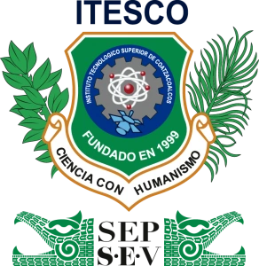
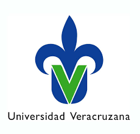

BECAS
En este apartado encontrarás los principales apoyos económicos disponibles para estudiantes de la región sur de Veracruz.

Instituto Tecnológico de Minatitlán (ITMIN)
Tipos de becas:
- Beca de Manutención (apoyo económico federal)
- Beca de Excelencia Académica
- Beca de Apoyo a la Titulación
- Beca para Prácticas Profesionales y Servicio Social
Sitio oficial: https://minatitlan.tecnm.mx/

Instituto Tecnológico Superior de Coatzacoalcos (ITESCO)
Tipos de becas:
- Beca de Aprovechamiento Académico
- Beca de Residencia Profesional
- Beca de Movilidad Estudiantil
- Beca Jóvenes Escribiendo el Futuro (gobierno federal)
Sitio oficial: https://itesco.edu.mx

Universidad Veracruzana
Tipos de becas:
- Beca UV de Excelencia académica
- Beca por Vulnerabilidad Económica
- Beca de Movilidad
- Beca de Investigación (para alumnos destacados)
Sitio oficial: